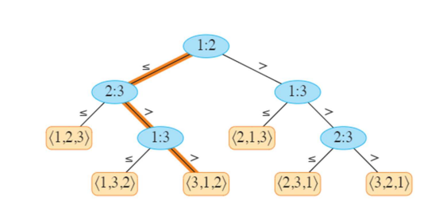
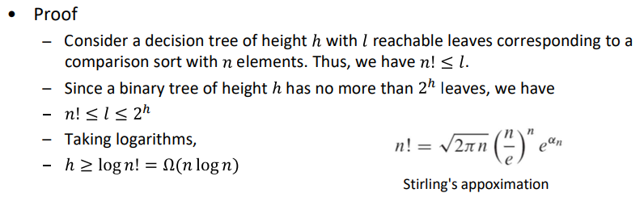
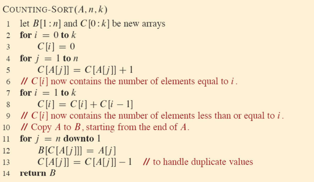
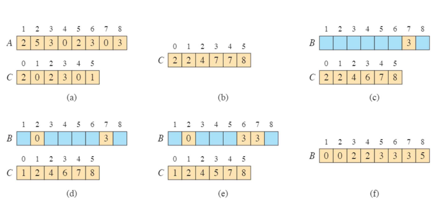
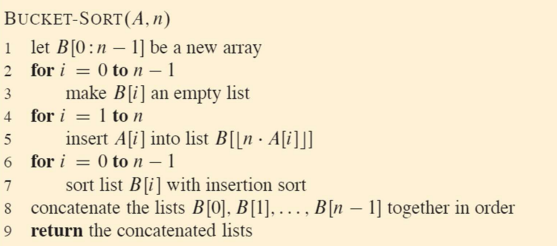
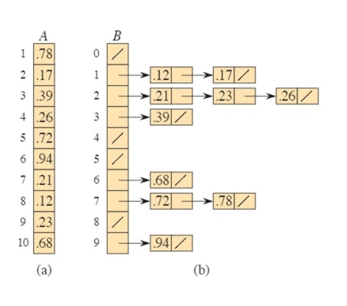
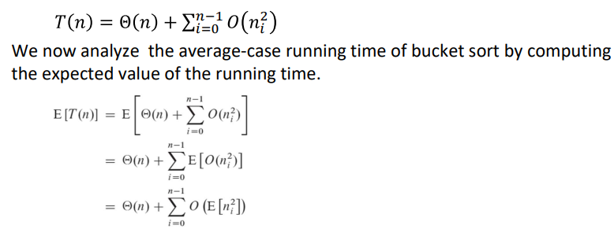
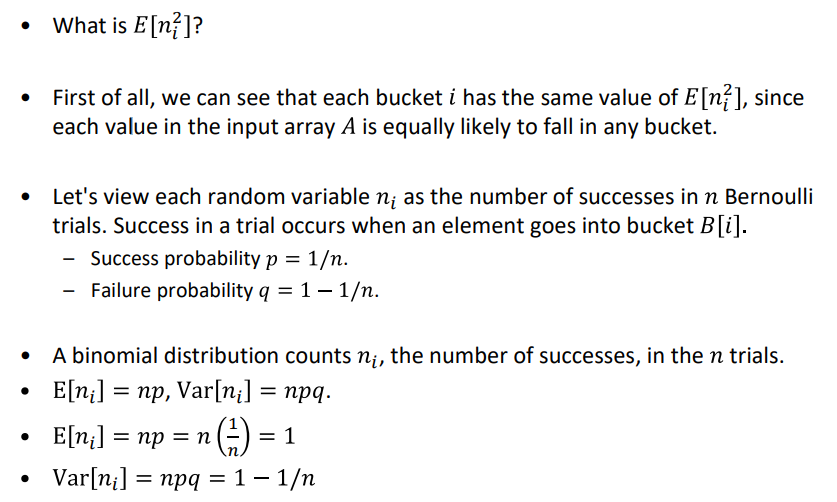
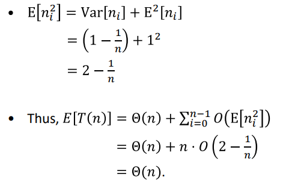

Lower Bounds for Sorting
comparison sort (비교 정렬)
입력 시퀀스에 대한 순서 정보를 얻기 위해 요소 간의 비교만 사용(요소가 중복되지 않음을 가정)
Decision Tree
특정 정렬 알고리즘에 의해 수행되는 요소 간의 비교를 나타내는 완전한 이진 트리(완전 이진 트리)
- 내부노드: i:j의 순서간 비교를 나타냄
- 리프노드 순열을 표시함
- 내부노드와 리프노드의 인덱스 = 정렬 알고리즘 시작 시 배열 요소의 원래 위치
- 비교정렬 실행 = 루트에서 리프까지의 경로
- n개의 요소에 n!개의 리프

The worst-case number of comparisons
: 루트에서 해당 결정노드까지의 가장 긴 경로의 길이(결정 트리의 높이)
Any comparison sort algorithm : Ω(nlog n)

Counting Sort
가정: 각 입력 요소는 어떤 정수 k에 대해 0에서 k까지의 범위 내의 정수
counting sort running time : Θ(n + k)
if k = O(n), then Θ(n)
- 각 입력 요소에 대해, 먼저 x개 이하의 요소의 개수를 결정
- 요소 x를 출력 배열의 위치로 직접 배치


Counting sort can be asymptotically faster than Θ(nlog n) because it is not a comparison sort
Counting sort is stable
: 같은 값을 가진 요소들은 출력 배열에서 입력 배열과 동일한 순서로 나타남
Bucket Sort
average-case running time : O(n)
가정: 입력값-균일한 분포 / 숫자 범위 [0, 1 )
- [0, 1 )을 돌일한 크기의 버킷으로 나눔
- n개의 입력을 버킷에 분배(숫자가 균일, 독립적으로 분포 -> 한 버킷에 쏠림x)
- 각 버킷의 숫자를 정렬한 다음 버킷을 숫서대로 통과하여 각 버킷의 요소를 나열


Bucket Sort: Running Time
worst case : O(n)
ni는 B[i] 버킷에 배치된 요소의 수를 나타내는 확률 변수 / 입 정렬은 이차 시간에 실행



비록 입력값의 분배가 고르지 않더라도 linear time을 갖는다.